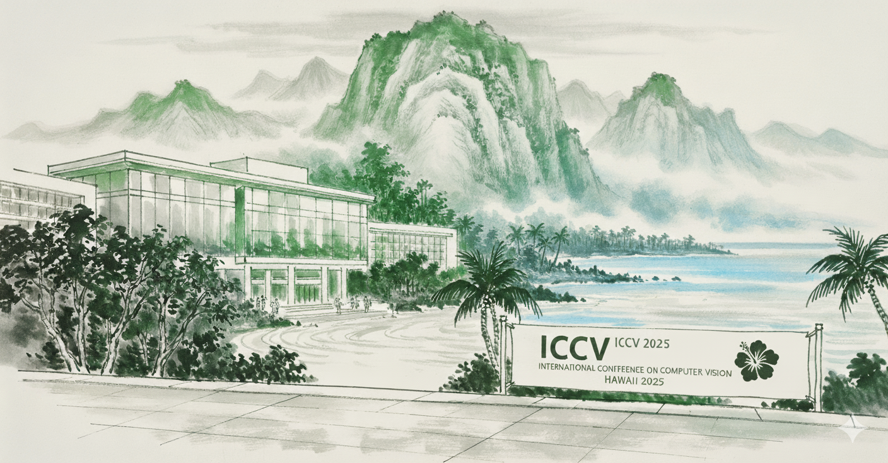
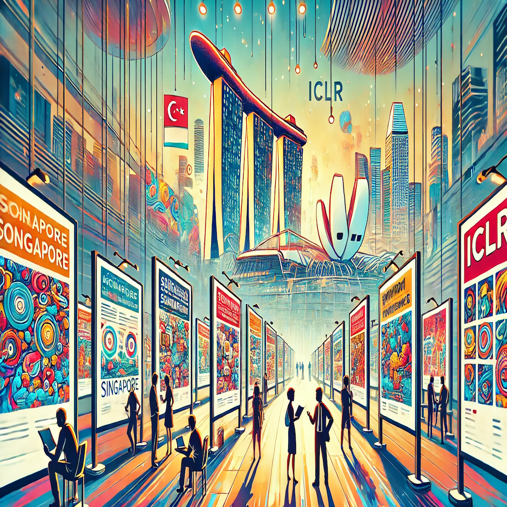
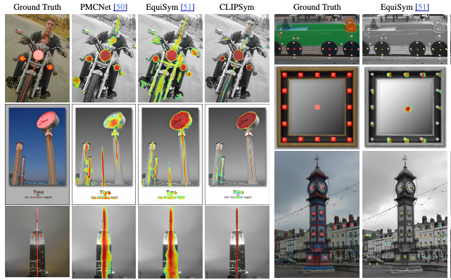
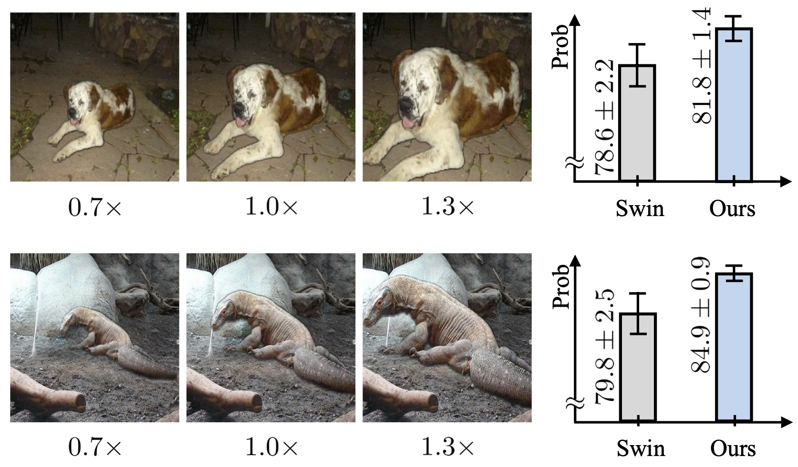
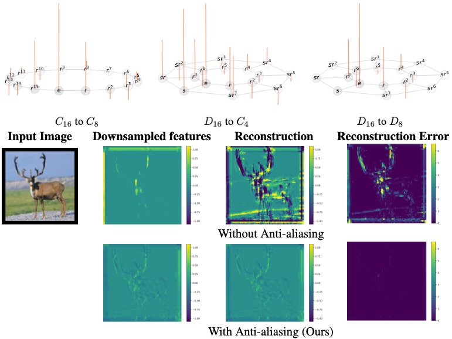

Md Ashiqur Rahman /√¶ É…™k/ üéß
I am Md Ashiqur Rahman, a fourth-year Ph.D. student in Computer Science at Purdue University, guided by Professor Raymond A. Yeh. My research is primarily focused on the development of robust machine learning models, particularly in the areas of equivariance and geometric machine learning, as well as exploring the applications of AI in scientific discovery. I earned my Bachelor's degree in Computer Science and Engineering from the Bangladesh University of Engineering and Technology (BUET). I am passionate about advancing the field of computer science and am always open to discussions and collaborations. Thank you for visiting my page!
My research unifies geometric principles, signal processing techniques, and equivariance theory to
develop more robust and consistent AI systems.
Computer Vision: Geometric Deep Learning, Equivariant Neural Networks, Generative Models
Operator Learning: Solving PDEs, Scientific Machine Learning
Operator Learning: Solving PDEs, Scientific Machine Learning
üèõÔ∏è Affiliations
PhD, Purdue University
2021 - Present
Autodesk Research
Summer 2025
NVIDIA Research
Summer 2023
Bangladesh University of Engineering and Technology
2015 - 2019
üìú Updates

Two papers accepted at ICCV 2025 !
Aug 2025
I will spend my summer as AI Research Intern at Autodesk
!
May 2025

I will attend ICLR 2025 in Singapore .
April 2025

I will attend NeurIPS 2024 in Vancouver, Canada .
December 2024
üìö Publications

CLIPSym: Delving into Symmetry Detection with CLIP
Abstract:
Symmetry is one of the most fundamental geometric cues in computer vision, and
detecting it has been an ongoing challenge.
With the recent advances in vision-language models,~i.e., CLIP, we
investigate whether a pre-trained CLIP model can aid symmetry detection by
leveraging the additional symmetry cues found in the natural image
descriptions. We propose CLIPSym, which leverages CLIP's image and language
encoders and a rotation-equivariant decoder based on a hybrid of Transformer
and G-Convolution to detect rotation and reflection symmetries. To fully
utilize CLIP's language encoder, we have developed a novel prompting
technique called Semantic-Aware Prompt Grouping (SAPG), which aggregates a
diverse set of frequent object-based prompts to better integrate the
semantic cues for symmetry detection. Empirically, we show that CLIPSym
outperforms the current state-of-the-art on three standard symmetry
detection datasets (DENDI, SDRW, and LDRS). Finally, we conduct detailed
ablations verifying the benefits of CLIP's pre-training, the proposed
equivariant decoder, and the SAPG technique.
... See More

Local Scale Equivariance with Latent Deep Equilibrium Canonicalizer
Abstract:
Scale variation is a fundamental challenge in computer vision. Objects of the
same class can have different sizes
and their perceived size is further affected by the distance from the
camera. These variations are local to the objects, i.e., different object
sizes may change differently within the same image. To effectively handle
scale variations, we present a deep equilibrium canonicalizer (DEC) to
improve the local scale equivariance of a model. DEC can be easily
incorporated into existing network architectures and can be adapted to a
pre-trained model. Notably, we show that on the competitive ImageNet
benchmark, DEC improves both model performance and local scale consistency
across four popular pre-trained deep-nets, e.g., ViT, DeiT, Swin, and BEiT.
... See More

Group Downsampling with Equivariant Anti-aliasing
Abstract:
Downsampling layers are crucial building blocks in CNN architectures, which help
to increase the receptive field for learning high-level features and reduce the
amount of memory/computation in the model.
In this work, we study the generalization of the uniform downsampling layer
for group equivariant architectures, e.g., $G$-CNNs. That is, we aim to
downsample signals (feature maps) on general finite groups with
anti-aliasing. This involves the following (a) Given a finite group and a
downsampling rate, we present an algorithm to form a suitable choice of
subgroup. (b) Given a group and a subgroup, we study the notion of
bandlimited-ness and propose how to perform anti-aliasing. Notably, our
method generalizes the notion of downsampling based on classical sampling
theory. When the signal is on a cyclic group, i.e., periodic, our method
recovers the standard downsampling of an ideal low-pass filter followed by a
subsampling operation. Finally, we conducted experiments on image
classification tasks demonstrating that the proposed downsampling operation
improves accuracy, better preserves equivariance, and reduces model size
when incorporated into $G$-equivariant networks.
... See More
Pretraining Codomain Attention Neural Operators for Solving Multiphysics PDEs.
Abstract:
Existing neural operator architectures face challenges when solving multiphysics
problems with coupled partial differential equations (PDEs), due to complex
geometries,
interactions between physical variables, and the lack of large amounts of
high-resolution training data. To address these issues, we propose Codomain
Attention Neural Operator (CoDA-NO), which tokenizes functions along the
codomain or channel space, enabling self-supervised learning or pretraining
of multiple PDE systems. Specifically, we extend positional encoding,
self-attention, and normalization layers to the function space. CoDA-NO can
learn representations of different PDE systems with a single model. We
evaluate CoDA-NO's potential as a backbone for learning multiphysics PDEs
over multiple systems by considering few-shot learning settings. On complex
downstream tasks with limited data, such as fluid flow simulations and
fluid-structure interactions, we found CoDA-NO to outperform existing
methods on the few-shot learning task by over 36%.
... See More
Truly Scale-Equivariant Deep Nets with Fourier Layers.
Abstract:
In computer vision, models must be able to adapt to changes in image resolution
to effectively carry out tasks such as image segmentation
; This is known as scale-equivariance. Recent works have made progress in
developing scale-equivariant convolutional neural networks, e.g., through
weight-sharing and kernel resizing. However, these networks are not truly
scale-equivariant in practice. Specifically, they do not consider
anti-aliasing as they formulate the down-scaling operation in the continuous
domain. To address this shortcoming, we directly formulate down-scaling in
the discrete domain with consideration of anti-aliasing. We then propose a
novel architecture based on Fourier layers to achieve truly
scale-equivariant deep nets, i.e., absolute zero equivariance-error.
Following prior works, we test this model on MNIST-scale and STL-10
datasets. Our proposed model achieves competitive classification performance
while maintaining zero equivariance-error.
... See More

U-NO: U-shaped Neural Operators
Abstract:
Neural operators generalize classical neural networks to maps between
infinite-dimensional spaces, e.g., function spaces.
Prior works on neural operators proposed a series of novel methods to learn
such maps and demonstrated unprecedented success in learning solution
operators of partial differential equations. Due to their close proximity to
fully connected architectures, these models mainly suffer from high memory
usage and are generally limited to shallow deep learning models. In this
paper, we propose U-shaped Neural Operator (U-NO), a U-shaped memory
enhanced architecture that allows for deeper neural operators. U-NOs exploit
the problem structures in function predictions and demonstrate fast
training, data efficiency, and robustness with respect to hyperparameters
choices. We study the performance of U-NO on PDE benchmarks, namely, Darcy's
flow law and the Navier-Stokes equations. We show that U-NO results in an
average of 26% and 44% prediction improvement on Darcy's flow and turbulent
Navier-Stokes equations, respectively, over the state of the art. On
Navier-Stokes 3D spatiotemporal operator learning task, we show U-NO
provides 37\% improvement over the state of art methods.
... See More
Generative Adversarial Neural Operators.
Abstract:
We propose the generative adversarial neural operator (GANO), a generative model
paradigm for learning probabilities on infinite-dimensional function spaces.
The natural sciences and engineering are known to have many types of data
that are sampled from infinite-dimensional function spaces, where classical
finite-dimensional deep generative adversarial networks (GANs) may not be
directly applicable. GANO generalizes the GAN framework and allows for the
sampling of functions by learning push-forward operator maps in
infinite-dimensional spaces. GANO consists of two main components, a
generator neural operator and a discriminator neural functional. The inputs
to the generator are samples of functions from a user-specified probability
measure, e.g., Gaussian random field (GRF), and the generator outputs are
synthetic data functions. The input to the discriminator is either a real or
synthetic data function. In this work, we instantiate GANO using the
Wasserstein criterion and show how the Wasserstein loss can be computed in
infinite-dimensional spaces. We empirically study GANO in controlled cases
where both input and output functions are samples from GRFs and compare its
performance to the finite-dimensional counterpart GAN. We empirically study
the efficacy of GANO on real-world function data of volcanic activities and
show its superior performance over GAN.
... See More

PaCMO: Partner Dependent Human Motion Generation in Dyadic Human Activity using Neural Operators.
Abstract:
We address the problem of generating 3D human motions in dyadic activities. In
contrast to the concurrent works, which mainly focus on
generating the motion of a single actor from the textual description, we
generate the motion of one of the actors from the motion of the other
participating actor in the action. This is a particularly challenging,
under-explored problem, that requires learning intricate relationships
between the motion of two actors participating in an action and also
identifying the action from the motion of one actor. To address these, we
propose partner conditioned motion operator (PaCMO), a neural operator-based
generative model which learns the distribution of human motion conditioned
by the partner's motion in function spaces through adversarial training. Our
model can handle long unlabeled action sequences at arbitrary time
resolution. We also introduce the "Functional Frechet Inception Distance"
(F2ID) metric for capturing similarity between real and generated data for
function spaces. We test PaCMO on NTU RGB+D and DuetDance datasets and our
model produces realistic results evidenced by the F2ID score and the
conducted user study.
... See More

BEENE: Deep Learning-based Nonlinear Embedding Improves Batch Effect Estimation.BEENE: Deep Learning-based Nonlinear Embedding Improves Batch Effect Estimation.
Abstract:
Analyzing large-scale single-cell transcriptomic datasets generated using
different technologies is challenging due to the presence of batch-specific
systematic variations known as batch effects.
Since biological and technological differences are often interspersed,
detecting and accounting for batch effects in RNA-seq datasets are critical
for effective data integration and interpretation. Low-dimensional
embeddings, such as principal component analysis (PCA) are widely used in
visual inspection and estimation of batch effects. Linear dimensionality
reduction methods like PCA are effective in assessing the presence of batch
effects, especially when batch effects exhibit linear patterns. However,
batch effects are inherently complex and existing linear dimensionality
reduction methods could be inadequate and imprecise in the presence of
sophisticated nonlinear batch effects. Results:- We present Batch Effect
Estimation using Nonlinear Embedding (BEENE), a deep nonlinear auto-encoder
network which is specially tailored to generate an alternative lower
dimensional embedding suitable for both linear and nonlinear batch effects.
BEENE simultaneously learns the batch and biological variables from RNA-seq
data, resulting in an embedding that is more robust and sensitive than PCA
embedding in terms of detecting and quantifying batch effects. BEENE was
assessed on a collection of carefully controlled simulated datasets as well
as biological datasets, including two technical replicates of mouse
embryogenesis cells, peripheral blood mononuclear cells from three largely
different experiments and five studies of pancreatic islet cells
... See More

CHAPAO: Likelihood and hierarchical reference-based representation of biomolecular sequences and applications to compressing multiple sequence alignments.
Abstract:
High-throughput experimental technologies are generating tremendous amounts of
genomic data, offering valuable resources to answer important questions and
extract biological insights. Storing this sheer amount of genomic data has
become a major concern in bioinformatics.
General purpose compression techniques (e.g. gzip, bzip2, 7-zip) are being
widely used due to their pervasiveness and relatively good speed. However,
they are not customized for genomic data and may fail to leverage special
characteristics and redundancy of the biomolecular sequences. Results:- We
present a new lossless compression method CHAPAO (COmpressing Alignments
using Hierarchical and Probabilistic Approach), which is especially designed
for multiple sequence alignments (MSAs) of biomolecular data and offers very
good compression gain. We have introduced a novel hierarchical referencing
technique to represent biomolecular sequences which combines likelihood
based analyses of the sequence similarities and graph theoretic algorithms.
We performed an extensive evaluation study using a collection of real
biological data from the avian phylogenomics project, 1000 plants project
(1KP), and 16S and 23S rRNA datasets. We report the performance of CHAPAO in
comparison with general purpose compression techniques as well as with
MFCompress and Nucleotide Archival Format (NAF)—two of the best known
methods especially designed for FASTA files. Experimental results suggest
that CHAPAO offers significant improvements in compression gain over most
other alternative methods.
... See More
⛏️ Resources
all software releases of the above projects can also be found here!‎